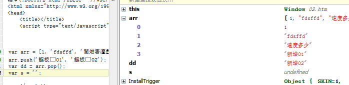
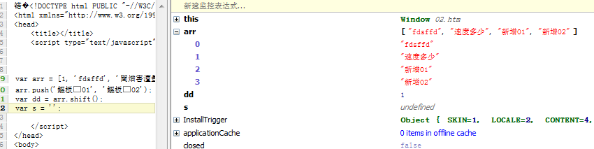
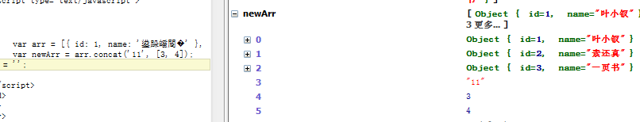

前言
昨天我们学习了下javascript中函数的参数与作用域的东东，现在回过头来看，其实都是与函数相关的，所以javascript中的函数仍然是王道，我们今天大概会发二篇或者三篇博客一起来巩固我们的javascript吧！
PS：各位，阿里失败啦，这个事情不必关心啦......我下周再找工作了
object 类型
我们有两种方式可定义一个对象：
1 var object = {}; 2 var object = new Object();
PS：根据对象字面量创建的对象不会调用Object构造函数
javascript中的对象类似于我们的hashtable，是一种键值对的形式，他可以以不同维度方式展示，某些时候甚至可以模拟我们的数据库结构！
对象在内存的存储方式是将具体的存在堆里面，而在栈里面保存一个引用，所以我们经常遇到两个有意思的东东，
一个是引用赋值，后者变化而影响前者，一者就是深度克隆了，我们在此看看这两个东东：
1 var a = { a: 6 }; 2 alert(a.a);//6 3 var b = a; 4 b.a = 66; 5 alert(a.a);//66
这个题，我们昨天就见过了，这里再提出来说下，于是我们来看看深度克隆呢：
PS：这里先科普一下克隆吧，可能有些朋友还不知道什么意思呢
浅度克隆：基本类型为值传递，对象仍为引用传递。
深度克隆：所有元素或属性均完全克隆，并于原引用类型完全独立，即，在后面修改对象的属性的时候，原对象不会被修改。
这里还会用到下面这个东东：
hasOwnProperty：
是用来判断一个对象是否有你给出名称的属性或对象。不过需要注意的是，此方法无法检查该对象的原型链中是否具有该属性，该属性必须是对象本身的一个成员。
1 function cloneObj(obj) { 2 var o = obj.constructor == Array ? [] : {}; //首先处理变量，看看是数组还是对象啦 3 for (var k in obj) { 4 //我们知道for in 会将原型的东西也给遍历出来，所以我们这里需要做一个判断 5 if (obj.hasOwnProperty(k)) { 6 //递归方式处理 7 o[k] = typeof obj[k] === 'objext' ? cloneObj(obj[k]) : obj[k]; 8 } 9 } 10 return o; 11 } 12 13 var a = { a: 'aaa', b: 'bbb', c: { d: 'ddd', e: [1, 2, 4]} }; 14 var b = cloneObj(a); 15 var s = '';
好了，我们对对象的学习暂时到这里，下面来看看数组吧。
Array类型
无论什么语言，数组与字符串的操作都是十分常见的，我们这里就来理一理我们javascript中的数组。
定义数组
定义数组的方式多种多样，我一般会用到其中两种，确切的说，我会用其中一种：
1 var arr = []; 2 var arr = new Array(); 3 var arr = [1, 2, 3]; 4 var arr = new Array(1, 2, 3);
数组字面量是我们所亲睐的做法。
javascript中数组的长度是不定的，数组各个项目的类型也是可以变的，所以用起来非常灵活。
检测数组
我们经常需要判断一个对象是不是数组（数组也是对象，其Array实一个构造函数哦），于是我们会用到以下方法：
1 var a = arr.constructor == Array;//true 2 var b = arr instanceof Array; //true 3 var c = Array.isArray(arr); //true，ECMAScript5新增
本来instanceof足够满足条件了，但是有这么一个情况就是我们页面中存在几个框架，每个框架都有其window全局环境，所以就可能出现2个Array构造函数。
数组与字符串
数组与字符串经常做转换，字符串转换为数组使用split，数组转换为字符串却有多种方案：
1 var b = [1, 'fdsffd', '速度多少']; 2 var a = [ {a: 'aaa'}, {b: 'bbb'}, {c: { d: 'ddd', e: [1, 2, 4]} }]; 3 var str1 = a.toString(); //"[object Object],[object Object],[object Object]" 4 var str2 = b.toString(); //"1,fdsffd,速度多少"
所以我们要将复杂的转换为字符串还是要费点功夫，但是有个叫JSON的家伙已经帮我们干了这些事情了。。。
若是各位对"，"分割不过瘾，可以使用join方法选择自己喜欢的分割方式。
增加项目
增加数组项目也有多种方法，但是我们一般使用push的方式，这里可能涉及到一点点删除的功能了。
针对栈的功能，js提供了push与pop两个东西，一个是加入，一个是弹出最上面的并且删除，其实都是数组尾部操作比较容易理解：
1 var arr = [1, 'fdsffd', '速度多少']; 2 arr.push('新增01', '新增02'); //可以操作多个哦 3 var dd = arr.pop(); 4 var s = '';

另外一个东西就是模拟队列的操作了，模拟队列的话删除是会在数组的头部做操作，他隐藏了整个数组的移动：
1 var arr = [1, 'fdsffd', '速度多少']; 2 arr.push('新增01', '新增02'); //可以操作多个哦 3 var dd = arr.shift();

其中这个shift我们需要抽出来单独处理一番。
shift用于取得数组的第一项，并且将之移除，整个数组下标会变化，长度减1
与之对应的是unshift，会在队列最前面增加数组，而不必关心下标的操作
PS：我在想javascript有没有封装一个在数组中间删除项目的方法。。。好像没有找到
数组排序
数组排序是我们经常遇到的东西，一般使用reverse与sort即可。
reverse比较简单便是翻转数组，sort方法比较常用，其中可以用于复杂数组的排序：
1 var arr = [{ id: 1, name: '叶小钗' }, { id: 2, name: '素还真' }, { id: 3, name: '一页书'}]; 2 arr.sort(function (v1, v2) { 3 if (v1.id < v2.id) { 4 return 1; 5 } else if (v1.id > v2.id) { 6 return -1; 7 } else { 8 return 0; 9 } 10 });
基于当前数组创建新数组
concat可以根据当前数组创建新的数组，说白了就是将两个数组变成一个：
1 var arr = [{ id: 1, name: '叶小钗' }, { id: 2, name: '素还真' }, { id: 3, name: '一页书'}]; 2 var newArr = arr.concat('11', [3, 4]);

另外一个方法为slice，他可以根据当前数组项目，由里面抽取几项组成新的数组：
1 var arr = [{ id: 1, name: '叶小钗' }, { id: 2, name: '素还真' }, { id: 3, name: '一页书'}]; 2 var newArr = arr.concat('11', [3, 4]); 3 var arr2 = newArr.slice(1, 4);//1 到 4直接位置的数组一共三项
最强的方法splice
刚刚还在说没有找到删除数组中间项目的方法呢，现在就冒了一个增加/删除 数组中间项目的方法，这个需要好好研究一番。
splice有三种用法：
删除：
可以删除任意数量项目，需要两个参数：删除的位置；删除的项目
splice(1, 2)会删除第2，3 项，而且数组下标长度会自己变化，真是好东西啊！
插入：
可以向指定位置插入任意项目的项，三个参数：初始位置、0（删除的项目）、插入的项目，这个有点重载的感觉
splice(2, 0, '叶小钗', '素还真');将在第三项后面插入两项
替换：
按道理说，替换不该用到这个东西，但是我们还是看看吧。
他的功能事实上市先删除在插入，三个参数：起始位置、删除项目、插入项目
splice(2, 1, 'red')；将删除第二项并插入red
ECMAScript 5新增
ECMAScript 5新增了两个取得位置的方法：indexOf与lastIndexOf，与字符串使用方法类似：
indexOf：由头开始找寻
lastIndexOf：由尾部开始找寻
还增加了迭代方法与归并方法，本来数组的方法我就用得不多，这些便暂时略去了，到要用到时候再查下吧。
Date类型
时间操作函数，也是我们javascript经常会用到的对象，要创建一个日期对象很简单：
var d = new Date(); //Date {Sat Jun 29 2013 11:30:36 GMT+0800}
这里来一个有意思的初始化方式：
var d = new Date(2013, 5, 29, 11, 32, 10); //注意此处第二个参数是月份，这里的5代表六！！！这个在有些地方容易引起错误
关于日期的用法，我这里不多说，便上一个例子吧：
网页中实现一个计算当年还剩多少时间的倒数计时程序，要求网页上实时动态显示“××年还剩××天××时××分××秒”
1 function counter() { 2 var date = new Date(); 3 var year = date.getFullYear(); 4 var date2 = new Date(year, 12, 31, 23, 59, 59); 5 var time = (date2 - date) / 1000; 6 var day = Math.floor(time / (24 * 60 * 60)) 7 var hour = Math.floor(time % (24 * 60 * 60) / (60 * 60)) 8 var minute = Math.floor(time % (24 * 60 * 60) % (60 * 60) / 60); 9 var second = Math.floor(time % (24 * 60 * 60) % (60 * 60) % 60); 10 var str = year + "年还剩" + day + "天" + hour + "时" + minute + "分" + second + "秒"; 11 document.getElementById("input").value = str; 12 } 13 window.setInterval("counter()", 1000);
PS：这个例子是抄来的，各位看他有什么问题没有呢？？？提示：月份
RegExp类型
对于正则表达式的使用其实我一直不太在行，每次都是学了就忘了再学在忘，纠其原因还是因为用得太少啦。
创建正则
我们有两种方法创建一个正则表达式：
var pattern = /....../; var pattern = new RegExp('......'); //推荐使用第一种
RegExp实例属性
每个正则表达式实例皆具有以下属性：
global： 表示是否设置了g标志 var pattern = /at/g;//表示匹配所以at ignoreCase：表示是否启用了i标志 var pattern = /at/i;不区分大小写 lastIndex：整数，表示开始搜索下一个匹配字符的位置，0开始 multiline：表示是否启用多行匹配 source：正则表达式的字符串表示，按照字面形式而不是传入构造函数中的字符串模式返回
关于正则表达式，我后面点单独写一篇博客算了，这里暂时到这里了
正则的学习需要多花功夫才行，这块太水了，这里搞完了又忘了
结语
上午的学习暂时到这里，我出去吃个饭，下午我们继续学习！